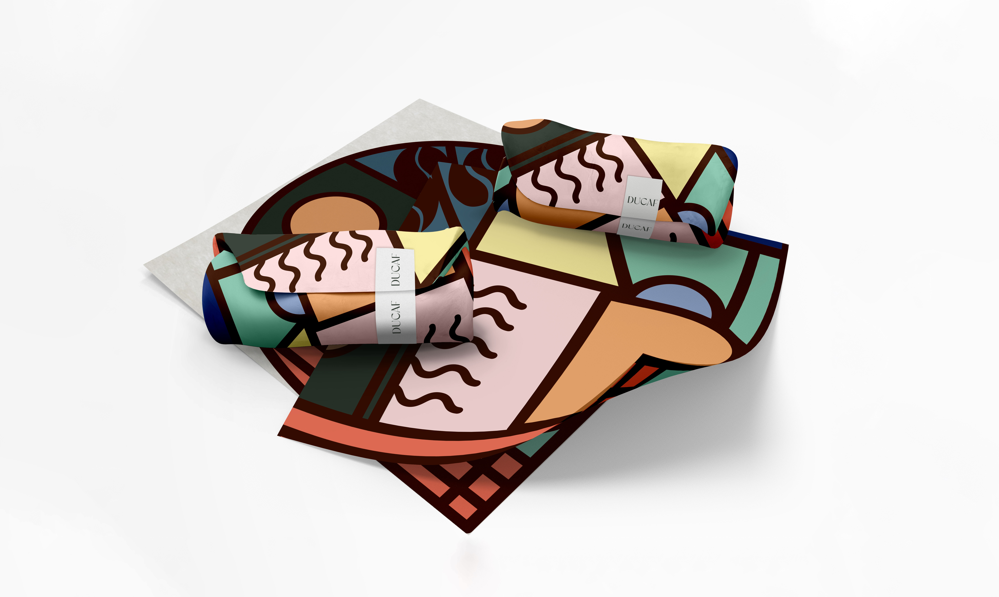
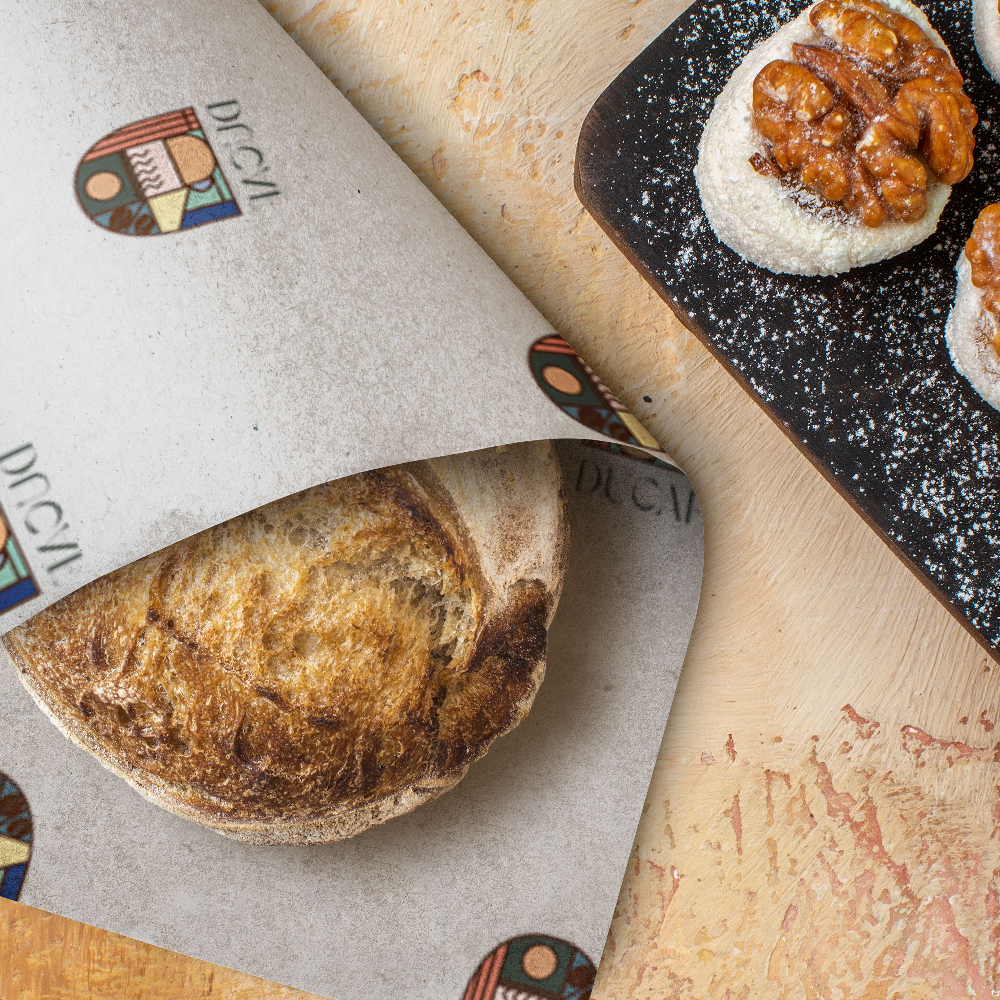
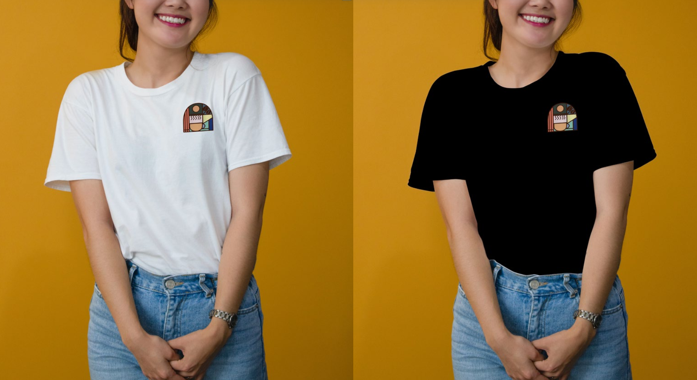
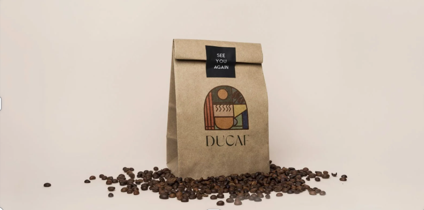

DUCAF
Brand Identity and Packaging Design

Project Overview
Ducaf is a Dubai-based Emirati concept brand. For this project, I developed a visual identity that feels both abstract and proudly local. The goal was to create a memorable logo system that could work across packaging, signage, and branded merchandise while reflecting an authentic Emirati character.




Design Reflection
Through this project, I explored how branding can balance cultural identity with a modern visual language. I wanted Ducaf to feel warm, memorable, and distinct, while also remaining flexible across different brand touchpoints.